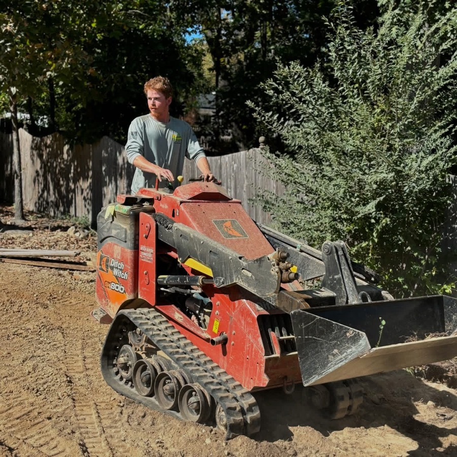

Our Services:
Lawn Care & Maintenance
- Mowing & Edging: Perfectly manicured lawn with sharp, crisp edges
- Aeration: Improve soil health and root growth with core aeration
- Fertilization: Healthy, lush green grass with a tailored fertilization schedule.
- Seasonal Cleanup: Fall or Spring cleanup to maintain a neat and tidy yard.
Landscape Design & Installation
Our Landscape Design & installation Include:
- Custom Garden Design: Flower beds, shrubs, trees, and more, tailored to your space.
- Hardscaping: walkways, fire pits, and some other stonework
- Lighting: Outdoor lighting instalations for beauty and security.
Shrub & Tree Care
Proper care for trees and shrubs is vital for their health and longevity. Our arborists specialize in pruning, trimming, and maintaining the health of your trees and shrubs to keep them looking great and growing strong.

Our Tree & Shrub care Services include:
- Pruning & Trimming: Enhance the shape and health of your tree and shrubs.
- Tree Removal: Safe and efficient removal of dead or dangerous trees.
Seasonal Services
- Spring & Fall Cleanups: Remove leaves, debris, and prepare your garden for the changing season.
- Mulching: Add mulch to retain moisture, suppress weeds, and enhance your garden appearence.